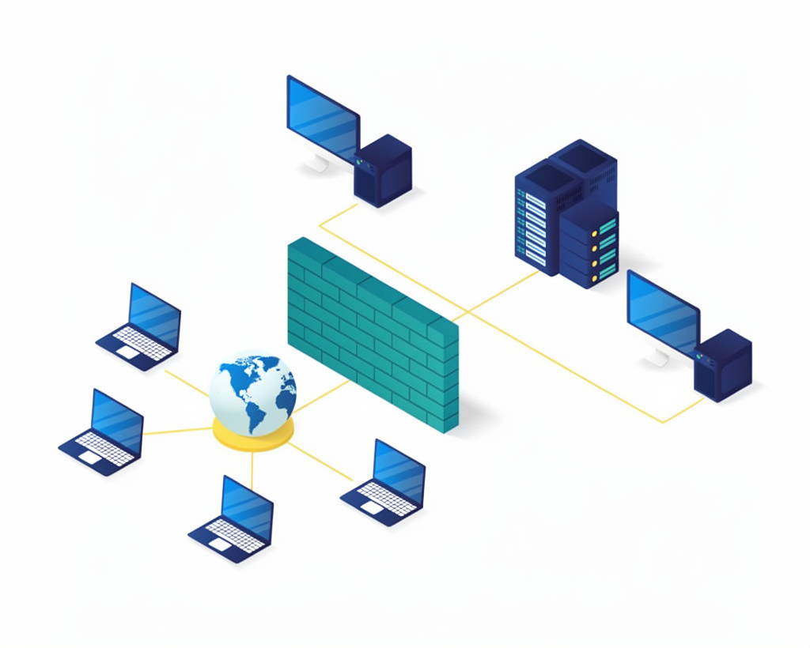

Jaringan Komputer: Modul 01-06
.png)
Jaringan komputer adalah sekumpulan komputer yang saling terhubung untuk berbagi data, informasi, dan sumber daya seperti printer atau koneksi internet.

Gambar 1.1 ..
Kamu telah mencapai akhir modul ini. Semangat Terus Belajarnya yaa✨
LAN (Local Area Network) → Jaringan dalam area kecil (sekolah, rumah)
MAN (Metropolitan Area Network) → Jaringan dalam satu kota
WAN (Wide Area Network) → Jaringan luas antar negara (contoh: internet)

Gambar 2.1
Kamu telah mencapai akhir modul ini. Semangat Terus Belajarnya yaa✨
- Bus → Semua perangkat terhubung ke satu kabel utama
- Star → Semua perangkat terhubung ke pusat (hub/switch)
- Ring → Terhubung membentuk lingkaran
- Mesh → Semua perangkat saling terhubung

Gambar 3.1
Kamu telah mencapai akhir modul ini. Semangat Terus Belajarnya yaa✨
IP Address adalah alamat unik yang digunakan untuk mengidentifikasi perangkat dalam jaringan.
Contoh:

Gambar 4.1
Kamu telah mencapai akhir modul ini. Semangat Terus Belajarnya yaa✨
- Router
- Switch
- Modem
- Access Point
Contoh:

Gambar 5.1
Kamu telah mencapai akhir modul ini. Semangat Terus Belajarnya yaa✨
Protokol jaringan adalah aturan atau standar yang digunakan agar perangkat dalam jaringan bisa saling berkomunikasi dengan benar.
Contoh:
- HTTP (HyperText Transfer Protocol) → Digunakan untuk mengakses website
- HTTPS → Versi aman dari HTTP
- FTP (File Transfer Protocol) → Untuk transfer file
- TCP/IP (Transmission Control Protocol/Internet Protocol) → Dasar komunikasi di internet

Gambar 6.1
Kamu telah mencapai akhir modul ini. Semangat Terus Belajarnya yaa✨